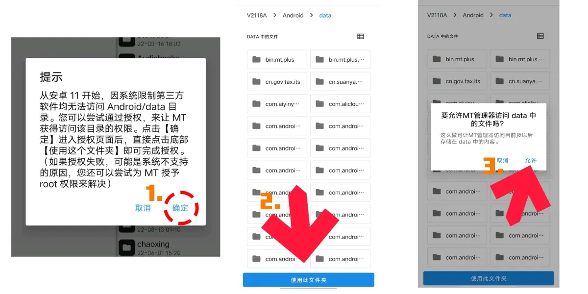
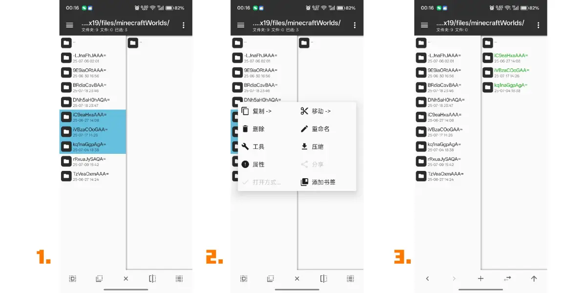
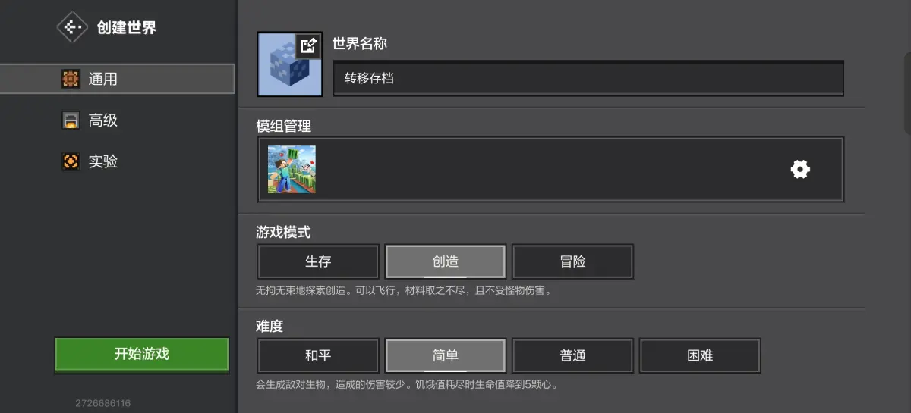
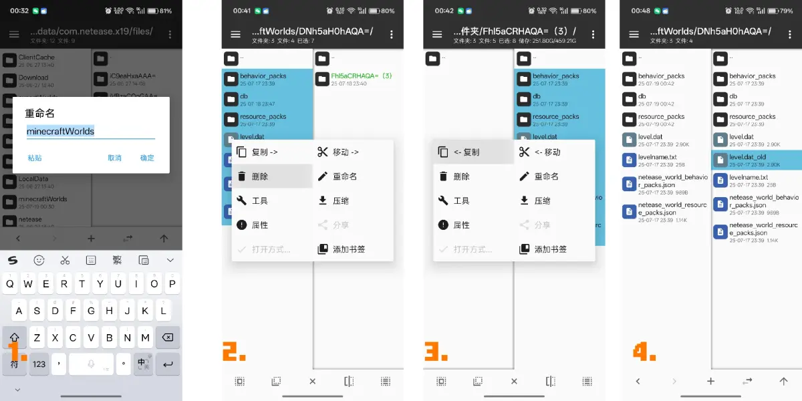
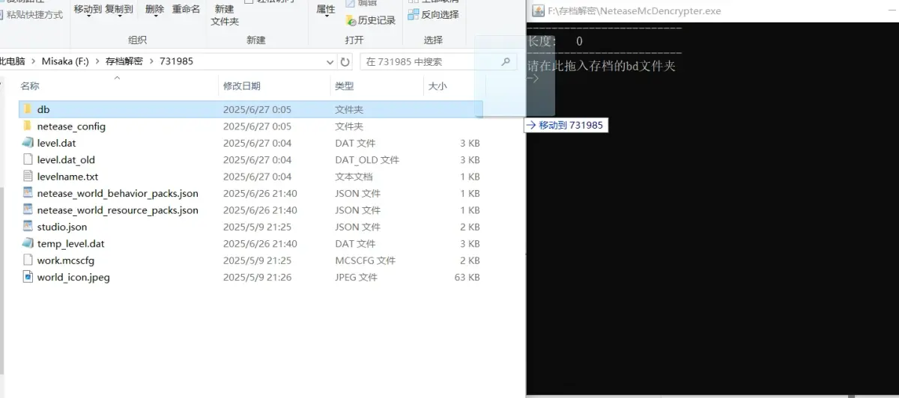

由于网易手机版官方未提供任何提取地图的手段，而导入地图也做了非常多的限制，但云存档功能有时候又可能失效，本教程会帮你解决这一难题。教程分为：
1）网易存档导出保存
2）地图导入网易手机版
3）网易存档转到国际版MC
本教程适用于安卓手机，IOS可在B站搜索类似教程。
我们需要准备的工具为MT管理器，可以从官网下载软件：
接着，找到网易手机版的地图位置，渠道服位置可能会有所差异：
/storage/emulated/0/Android/data/com.netease.x19/files/minecraftWorlds/
如果你的手机系统高于安卓11，还需要完成以下操作授权MT权限：

左侧找到网易存档位置，右侧则随便找一个文件夹，例如Download，接着横向滑动左侧的存档，进入选择状态，选择你需要导出的地图，长按选择复制，将文件复制到右侧文件夹：

要注意，网易地图分两种，kq1naGgpAgA=这种名字的是个人存档，可导出使用；ba8965a2-054c-4228-a090-4a3fcc2368d3这种名字的是加密的模组中心存档，经过复杂加密，不可导出使用。
复制完毕后，我们就能备份或分享自己的网易存档。
分享存档时记得长按文件夹，点击压缩，将文件打包为.zip格式再分享。
书接上文，如果你需要把存档从一个手机转移到另一个手机，但云存档失效，分享 .zip压缩文件转移到QQ、微信或者蓝牙连接的其他设备上，再通过另一台设备接收即可。
关于导入地图，创建一个空存档，点击进入游戏，存档加载完毕后立刻退出。

打开MT管理器，回到网易手机版存档的位置，即：
/storage/emulated/0/Android/data/com.netease.x19/files/minecraftWorlds/
在进行下一步操作前，非常建议大家备份整个minecraftWorlds文件夹，避免未来网易做出的任意修改损坏你的地图或导致封号。
此时，你必须退出网易手机版，并杀掉网易手机版的后台，否则可能导致封号。
由于在最近的网易版中，我们不能直接删改文件夹内的存档，因此下一步需要重命名这个文件夹，这里我们将其重命名为1，你们可以随意命名。
创建一个新文件夹，命名为minecraftWorlds，接着将备份好的地图再放到这个文件夹内。
这样，我们就可以修改这个文件夹内的任意地图了，网易也会识别这个文件夹当做新的地图库。
但我们不能直接把需要导入的地图放进网易地图库中，这样网易不能识别地图，此时前边创建的空地图产生了作用。
找到需要导入的地图和替换的空地图（可通过时间顺序或levelname.txt查询地图名字），删除空地图内的所有内容，将需要导入的地图内所有的文件横划选中，长按复制到空地图内。

我们注意到，level.dat_old文件无法复制，没有关系，打开网易我的世界，选择刚才的存档，选择复制地图，再点击进入复制的地图，我们就可以顺利地游玩了。
网易为开发者们提供了单人存档解密功能，因此利用MCstudio，就可以解密步骤（1）中提取出的地图文件，可参考如下教程：
没有电脑的成年人可以尝试在网吧解决。
未成年人可以进入存档转移QQ群205097309，寻求管理员的帮助。给手机玩家省点事儿。
当然，现在是2025年，B站上可以直接搜到网易存档解密工具，利用那个软件解开地图加密可简单多了。
将db文件夹直接拖入工具中即可。
最后全选db那一层的文件，全选以后右键，选择压缩.zip，再把后缀名.zip改为.mcworld，双击即可导入电脑mc，手机选择用mc打开也是同理。

国际版地图路径为：
WIndows端
C:\Users\用户名\AppData\Local\Packages\Microsoft.MinecraftUWP_8wekyb3d8bbwe\LocalState\games\com.mojang\minecraftWorlds
Android端
/emulated/0/Android/data/com.mojang.minecraftpe/files/games/com.mojang/minecraftWorlds
如果你想把基岩版和Java版的地图互相转换，可以尝试amulet，je2be等电脑软件，这里不再赘述。